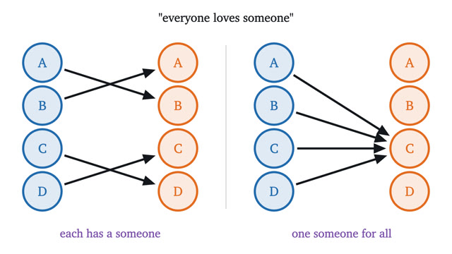
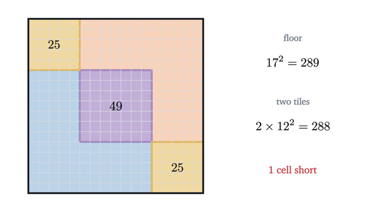

Logic and Proof
What follows from what, and how a proof makes you certain.
Start with lesson 1-
1
Truth tables: and, or, not as calculationThe word "or" has two meanings in English. Truth tables fix one, and turn questions about what sentences mean into finite calculations you can check row by row.

-
2
If-then statements: converse and contrapositiveWhen is "if P then Q" true? One table answers it, shows why the contrapositive says the same thing and the converse does not, and solves the four-card puzzle.

-
3
Quantifiers: for all, there exists, and negationEveryone loves someone" has two meanings. Quantifiers separate them, show how to negate each, and turn the epsilon-delta definition of a limit into a game.

-
4
Proof by contradiction: why √2 is not a fractionNo fraction squares to exactly 2. To prove it, assume one does and follow the assumption until it breaks. That method is proof by contradiction.

-
5
Sets, Venn diagrams and inclusion-exclusionUnion, intersection and complement defined exactly, De Morgan's laws for sets, and how to count a union of overlapping sets without counting anything twice.

-
6
Cantor's diagonal argument: some infinities are biggerSizes of infinite sets are compared by pairing. The integers and the fractions pair off with the counting numbers, and the real numbers provably do not.